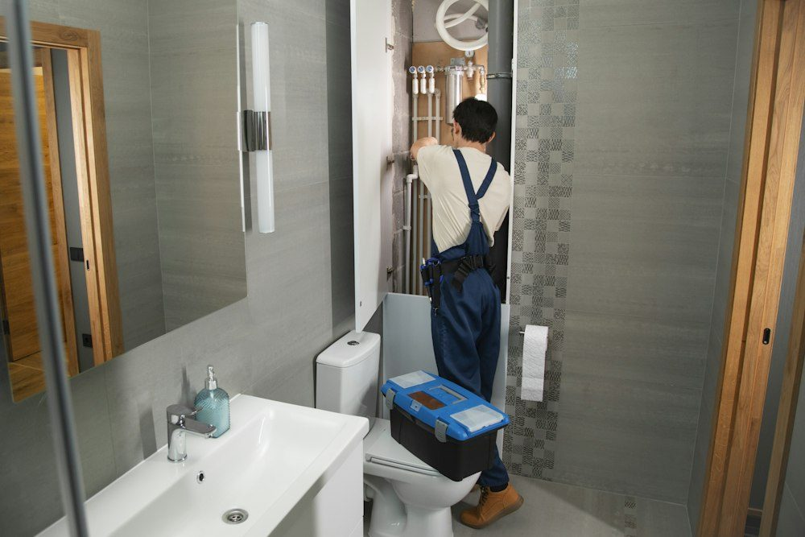

About
Plumbing, well pump and water treatment service based in Morrill, serving Waldo County homes and businesses, including same-day emergency calls.
Visit & Contact
Phone
(207) 323-5356
Address
219 Higgins Hill Rd
Morrill, ME 04952
Hours
Open 7 days, 5 AM–10 PM
Hours differ between listings; call ahead to confirm.
Services & Prices

Illustrative photo
- Plumbing repair & leaks
- Well pump replacement
- Water heaters
- Water treatment
- Frozen pipes
- Shower valves & pipe replacement
- Emergency calls
From the business's public listings (checked Oct 30, 2026). Prices aren't published — call for a quote.
Reviews
Sample reviews for this demo — your real customer reviews would go here.
★★★★★“Showed up when they said they would and fixed the problem right the first time.”
— Sample review
★★★★★“Honest, professional and tidy. I'll be calling them again for any plumbing work.”
— Sample review